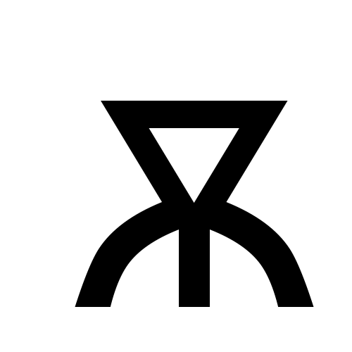

Strona Główna

Głupoty jakieś ale "facetka kazała" xd
Kilka ujęć najspecyficzniejszych liter polskiej cyrylicy – jusy. Po koleji mamy (od lewej):
jus (ę), duży jus (ą), jotizowany jus (ię/ję) oraz jotizowany duży jus (ią/ją)